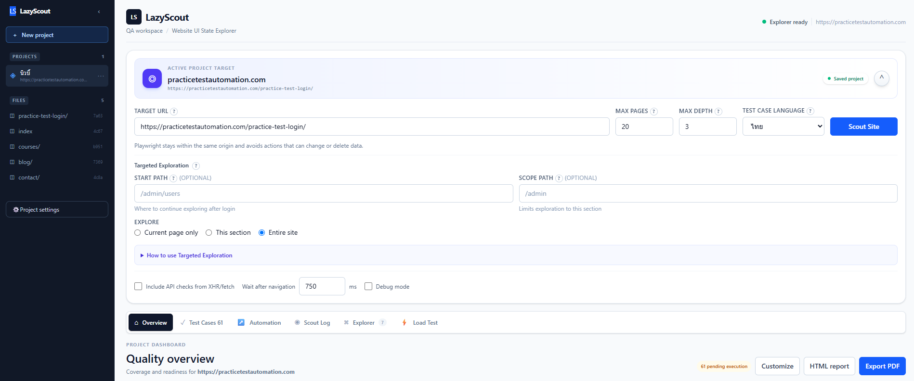

Scout a website safely
Discover same-origin pages, forms, controls, dialogs, and UI states with Playwright. Set page and depth limits before you run.
Target
URL
URL
Local-first QA workspace
Turn a website into reviewable Test Cases, Playwright starter code, local reports, and structured QA evidence. Your projects stay on your machine.
Built for practical QA
LazyScout automates repetitive discovery while keeping Test Case decisions, evidence, and execution under your control.
Discover same-origin pages, forms, controls, dialogs, and UI states with Playwright. Set page and depth limits before you run.
Edit steps and expected results, reorder cases, add folders, tags, and Jira or GitLab references.
Choose the cases to run, inspect terminal-like logs, cancel safely, and save only screenshots you request.
Reports, screenshots, automation, bugs, CSV files, and logs live in one portable local workspace.
Quick start
Requires Node.js 20 or newer. LazyScout runs locally and opens the workspace in your browser.
npx
$ npx lazyscout@latest
lazyscout anywhere
$ npm install -g lazyscout
$ lazyscout --workspace "D:\QA\LazyScout"
Your workflow
Map pages and controls.
Edit Test Case drafts.
Use Playwright locally.
Share useful evidence.
Product guide
A practical walkthrough based on the local application. Follow it in order for your first Project, or jump directly to a tool from the navigation.
Start here
LazyScout is a local application. The public website is documentation only; your QA workspace opens on your machine and Project data stays there.
npx lazyscout@latest
For local development, start the API and web app in two terminals:
npm.cmd run dev:server
npm.cmd run dev:webhttp://localhost:5173 · API server:
http://localhost:4000
01 · PROJECTS
Use one Project for each website or environment. Projects do not share Test Cases, credentials, Scout Logs, screenshots, or reports.
02 · DISCOVERY
Scout uses Playwright to visit same-origin pages, inspect accessible controls, observe UI states, and draft Test Cases for review.

practicetestautomation.com. Select the image to inspect the
full-size interface.
The website or path Playwright starts from.
Hard limit for the number of pages inspected.
How many link levels Scout follows from the starting page.
Controls generated Steps, Expected Result, and generator notes.
Continue from a page after login, such as /dashboard.
Keep discovery inside a section such as /admin.
Enable Include API checks from XHR/fetch when requests triggered by UI actions should appear in Test API. Increase Wait after navigation for slow client-rendered pages or delayed modals.
03 · AUTHENTICATION
Each Project has a persistent browser profile. Use it for normal form login, SSO, or a manual authentication step that cannot be automated safely.
localhost and 127.0.0.1 are different origins and do not share
cookies.
04 · DASHBOARD
Overview summarizes the active Project. KPI cards show total cases, Pass, Failed, Need Review, and Requirement coverage. Each chart can be changed independently where the selected data supports it.
Use Customize to change chart types, HTML report for a portable browser report, and Export PDF for a fixed project summary.
05 · TEST DESIGN
Search or select a Module, filter by tags and status, then open the three-dot Action menu to view, edit, duplicate, or delete a case. Drag rows to reorder them.
| Field | What the tester should verify |
|---|---|
| Steps | Actions are specific, ordered, and use safe test data. |
| Expected Result | The result describes observable behavior, not only “works”. |
| Priority / Type | Use them to create focused smoke or regression runs. |
| Requirement | Add a Jira ID, GitLab issue, ticket, or requirement URL. |
| Execution | Pending until run; then paired with the latest Pass or Failed result. |
Import CSV, XLSX, or JSON from the toolbar. The image-to-Test-Case flow uses OCR as a starting draft; correct extracted text before saving.
06 · PLAYWRIGHT
Choose cases with the run checkbox; Run all skips unchecked cases. Review generated Playwright code, press Run, then inspect the terminal-like log for each action and the final result.
await page.screenshot(...) to Playwright code. LazyScout does not capture every page
automatically.
07 · DIAGNOSTICS
Scout Log records discovered pages, observed states, attempted actions, blocked destructive controls, and completion issues. Explorer opens as a modal and groups the discovered pages and states so you can trace a generated Test Case back to its source path.
08 · NETWORK
Test API lists XHR/fetch calls collected during UI actions. Run a safe request, add a Project token when required, and compare method, URL, status, duration, and result.
09 · EVIDENCE
A failed automation run creates a Bug Report draft linked to its Test Case. Complete severity, reproduction steps, actual result, expected result, and evidence before sharing it. The Screenshots tab is a local gallery where images can be downloaded, deleted, or attached to a report.
10 · BASIC LOAD
Set virtual users, requests per user, and the delay between requests. Start with small values and review status, duration, and Pass or Failed results in the request table.
11 · LOCAL STORAGE
Select Local workspace at the bottom of the sidebar. Supply --workspace at
startup when you need a custom folder.
LazyScout/
├── projects/<project-id>/
│ ├── project.json
│ ├── test-cases.json
│ ├── test-cases.csv
│ ├── test-data.csv
│ ├── automation/
│ ├── screenshots/
│ ├── bugs/
│ ├── reports/
│ └── logs/
├── backups/
└── settings.json12 · HANDOFF
Use CSV or XLSX for team editing, JSON for structured backup and re-import, HTML for a portable browser report, PDF for a fixed summary, and ZIP when reports, bugs, logs, and image evidence must travel together.
13 · SAFETY
14 · HELP
Use the Project login browser, keep the hostname identical, close it after login, then Scout the authenticated Start Path again.
Check Scout Log for Cloudflare, authentication, delayed rendering, cross-origin navigation, or pages with no accessible controls.
Stop the older LazyScout Node process before running npm.cmd run dev:server again.
npx playwright install chromiumReady when you are
Start with the website you already need to test.